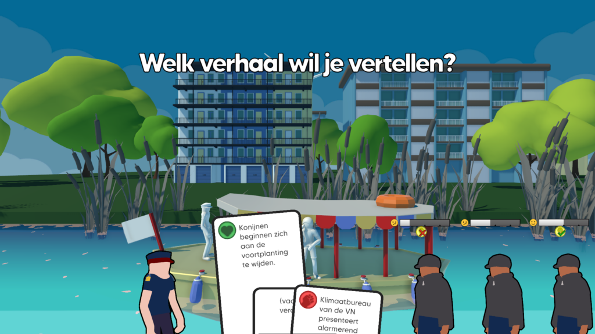
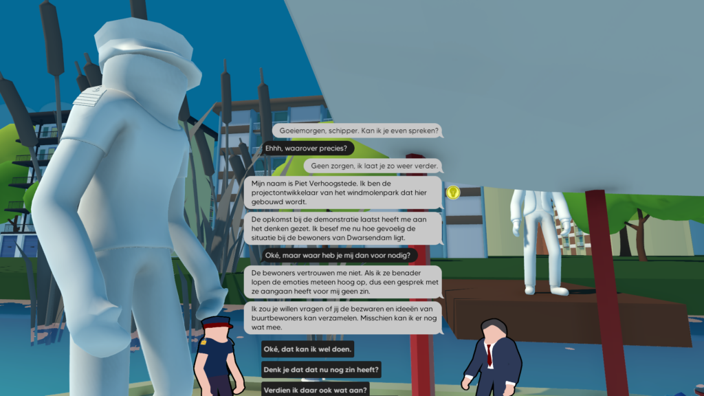

Representing the voices of the energy transition
Ill Wind is a proof-of-concept for a game that aims to represent and make concrete the worries of various stakeholders within the energy transition: from citizens to project planners, from energy corporations to birdwatchers.

Synopsis
In this game, the player fills the role of a skipper, bringing locals and tourists across the idyllic village of Dwarsendam. To earn his living, the skipper must entertain these tourists with local stories for the occasional generous tip.
Lately however, Dwarsendam has been the centre of a divisive development: an enormous windmill park, just outside of the city. Needless to say, this stirs up all kinds of emotions, the debate growing less and less friendly with each passing day.
As a public transporter, the skipper has a unique position as someone right in the middle of Dwarsendam's community. Unwillingly, he finds himself in the role of a mediator in this heated debate, collecting stories, suggestions and opinions to share with the people who need to hear them.
With the tension rapidly rising, will the skipper be able to avoid a radical uprising? Or will he help facilitate it?

Gameplay
While sailing past the shores of Dwarsendam, the player can amuse or inform their customers by playing cards, each representing a story. Some stories will appeal to one type of customer, while completely putting off another. It's impossible to keep everyone happy, so the player will have to strike a balance, carefully considering which stories to tell so that ideally, everyone is at least somewhat content.
Every now and then, the player will sail past someone with a strong opinion about the windmill project; this could be a project planner or a local farmer. By engaging in conversation with them, the player collects unique cards that represent provocative stories, which can be used to either empower or alienate customers.
Use the tabs below to read more about my contributions to this project.